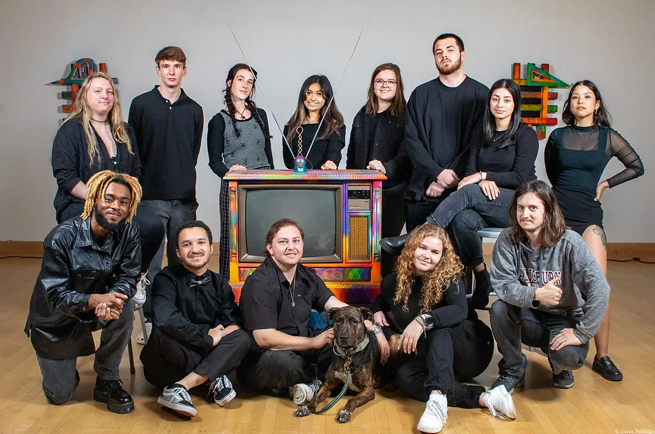
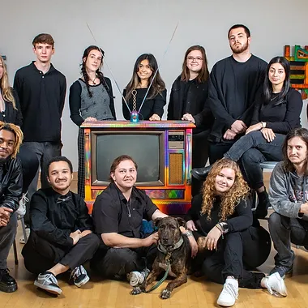

About Us
Why Perception?
Like the colors of a kaleidoscope,
art changes and it all depends on
the perception of the person looking at it.

Jinchul Kim
The man behind the magic.

Artists
Meet this show's talented students.
Exhibition Gallery
Senior Exhibition at the Downtown Salisbury SU Gallery.